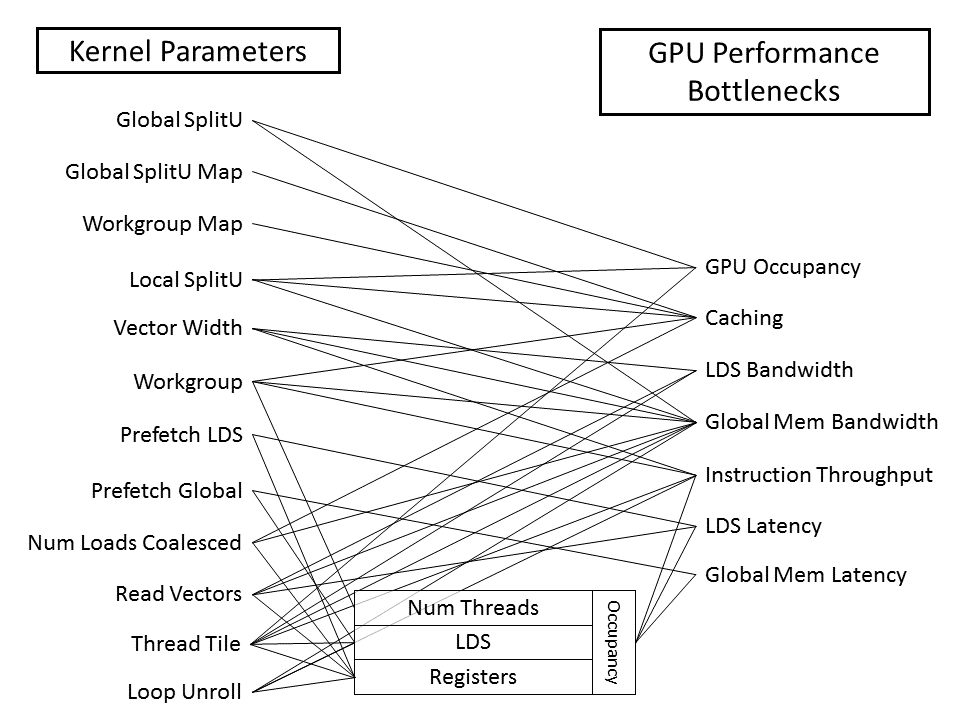

ROCm Libraries¶
rocBLAS¶
Refer rocBLAS User Guide for the updated rocBLAS user manual.
A BLAS implementation on top of AMD’s Radeon Open Compute ROCm runtime and toolchains. rocBLAS is implemented in the HIP programming language and optimized for AMD’s latest discrete GPUs.
Prerequisites¶
Installing pre-built packages¶
Download pre-built packages either from ROCm’s package servers or by clicking the github releases tab and manually downloading, which could be newer. Release notes are available for each release on the releases tab.
sudo apt update && sudo apt install rocblas
Quickstart rocBLAS build¶
Bash helper build script (Ubuntu only)
The root of this repository has a helper bash script install.sh to build and install rocBLAS on Ubuntu with a single command. It does not take a lot of options and hard-codes configuration that can be specified through invoking cmake directly, but it’s a great way to get started quickly and can serve as an example of how to build/install. A few commands in the script need sudo access, so it may prompt you for a password.
./install -h -- shows help
./install -id -- build library, build dependencies and install (-d flag only needs to be passed once on a system)
Manual build (all supported platforms)¶
If you use a distro other than Ubuntu, or would like more control over the build process, the rocblaswiki has helpful information on how to configure cmake and manually build.
Functions supported
A list of exported functions. from rocblas can be found on the wiki.
rocBLAS interface examples¶
In general, the rocBLAS interface is compatible with CPU oriented Netlib BLAS and the cuBLAS-v2 API, with the explicit exception that traditional BLAS interfaces do not accept handles. The cuBLAS’ cublasHandle_t is replaced with rocblas_handle everywhere. Thus, porting a CUDA application which originally calls the cuBLAS API to a HIP application calling rocBLAS API should be relatively straightforward. For example, the rocBLAS SGEMV interface is
GEMV API¶
rocblas_status
rocblas_sgemv(rocblas_handle handle,
rocblas_operation trans,
rocblas_int m, rocblas_int n,
const float* alpha,
const float* A, rocblas_int lda,
const float* x, rocblas_int incx,
const float* beta,
float* y, rocblas_int incy);
Batched and strided GEMM API¶
rocBLAS GEMM can process matrices in batches with regular strides. There are several permutations of these API’s, the following is an example that takes everything
rocblas_status
rocblas_sgemm_strided_batched(
rocblas_handle handle,
rocblas_operation transa, rocblas_operation transb,
rocblas_int m, rocblas_int n, rocblas_int k,
const float* alpha,
const float* A, rocblas_int ls_a, rocblas_int ld_a, rocblas_int bs_a,
const float* B, rocblas_int ls_b, rocblas_int ld_b, rocblas_int bs_b,
const float* beta,
float* C, rocblas_int ls_c, rocblas_int ld_c, rocblas_int bs_c,
rocblas_int batch_count )
rocBLAS assumes matrices A and vectors x, y are allocated in GPU memory space filled with data. Users are responsible for copying data from/to the host and device memory. HIP provides memcpy style API’s to facilitate data management.
Asynchronous API¶
Except a few routines (like TRSM) having memory allocation inside preventing asynchronicity, most of the library routines (like BLAS-1 SCAL, BLAS-2 GEMV, BLAS-3 GEMM) are configured to operate in asynchronous fashion with respect to CPU, meaning these library functions return immediately.
For more information regarding rocBLAS library and corresponding API documentation, refer rocBLAS
API¶
This section provides details of the library API
Types¶
Functions¶
Level 1 BLAS¶
rocblas_<type>scal()¶
rocblas_<type>scal_batched()¶
rocblas_<type>scal_strided_batched()¶
rocblas_<type>copy()¶
rocblas_<type>copy_batched()¶
rocblas_<type>copy_strided_batched()¶
rocblas_<type>dot()¶
rocblas_<type>dot_batched()¶
rocblas_<type>dot_strided_batched()¶
rocblas_<type>swap()¶
rocblas_<type>swap_batched()¶
rocblas_<type>swap_strided_batched()¶
rocblas_<type>axpy()¶
rocblas_<type>asum()¶
rocblas_<type>asum_batched()¶
rocblas_<type>asum_strided_batched()¶
rocblas_<type>nrm2()¶
rocblas_<type>nrm2_batched()¶
rocblas_<type>nrm2_strided_batched()¶
rocblas_i<type>amax()¶
rocblas_i<type>amax_batched()¶
rocblas_i<type>amax_strided_batched()¶
rocblas_i<type>amin()¶
rocblas_i<type>amin_batched()¶
rocblas_i<type>amin_strided_batched()¶
rocblas_<type>rot()¶
rocblas_<type>rot_batched()¶
rocblas_<type>rot_strided_batched()¶
rocblas_<type>rotg()¶
rocblas_<type>rotg_batched()¶
rocblas_<type>rotg_strided_batched()¶
rocblas_<type>rotm()¶
rocblas_<type>rotm_batched()¶
rocblas_<type>rotm_strided_batched()¶
rocblas_<type>rotmg()¶
rocblas_<type>rotmg_batched()¶
rocblas_<type>rotmg_strided_batched()¶
Level 2 BLAS¶
rocblas_<type>gemv()¶
rocblas_<type>hemv()¶
rocblas_<type>hemv_batched()¶
rocblas_<type>hemv_strided_batched()¶
rocblas_<type>gemv_batched()¶
rocblas_<type>gemv_strided_batched()¶
rocblas_<type>trmv()¶
rocblas_<type>trmv_batched()¶
rocblas_<type>trmv_strided_batched()¶
rocblas_<type>tbmv()¶
rocblas_<type>tbmv_batched()¶
rocblas_<type>tbmv_strided_batched()¶
rocblas_<type>trsv()¶
rocblas_<type>trsv_batched()¶
rocblas_<type>trsv_strided_batched()¶
rocblas_<type>ger()¶
rocblas_<type>ger_batched()¶
rocblas_<type>ger_strided_batched()¶
rocblas_<type>syr()¶
rocblas_<type>syr_batched()¶
rocblas_<type>syr_strided_batched()¶
Level 3 BLAS¶
rocblas_<type>trtri()¶
rocblas_<type>trtri_batched()¶
rocblas_<type>trtri_strided_batched()¶
rocblas_<type>trsm()¶
rocblas_<type>trsm_batched()¶
rocblas_<type>trsm_strided_batched()¶
rocblas_<type>trmm()¶
rocblas_<type>gemm()¶
rocblas_<type>gemm_batched()¶
rocblas_<type>gemm_strided_batched()¶
rocblas_<type>gemm_kernel_name()¶
rocblas_<type>geam()¶
BLAS Extensions¶
rocblas_gemm_ex()¶
rocblas_gemm_strided_batched_ex()¶
rocblas_trsm_ex()¶
rocblas_trsm_batched_ex()¶
rocblas_trsm_strided_batched_ex()¶
Auxiliary¶
rocblas_pointer_to_mode()¶
rocblas_create_handle()¶
rocblas_destroy_handle()¶
rocblas_add_stream()¶
rocblas_set_stream()¶
rocblas_get_stream()¶
rocblas_set_pointer_mode()¶
rocblas_get_pointer_mode()¶
rocblas_set_vector()¶
rocblas_set_vector_async()¶
rocblas_get_vector()¶
ocblas_get_vector_async()¶
rocblas_set_matrix()¶
rocblas_get_matrix()¶
rocblas_get_matrix_async()¶
rocblas_start_device_memory_size_query()¶
rocblas_stop_device_memory_size_query()¶
rocblas_get_device_memory_size()¶
rocblas_set_device_memory_size()¶
rocblas_is_managing_device_memory()¶
All API¶
hipBLAS¶
Introduction¶
Please Refer here for Github link hipBLAS
hipBLAS is a BLAS marshalling library, with multiple supported backends. It sits between the application and a ‘worker’ BLAS library, marshalling inputs into the backend library and marshalling results back to the application. hipBLAS exports an interface that does not require the client to change, regardless of the chosen backend. Currently, hipBLAS supports rocblas and cuBLAS as backends.
Installing pre-built packages¶
Download pre-built packages either from ROCm’s package servers or by clicking the github releases tab and manually downloading, which could be newer. Release notes are available for each release on the releases tab.
sudo apt update && sudo apt install hipblas
Quickstart hipBLAS build¶
Bash helper build script (Ubuntu only)
The root of this repository has a helper bash script install.sh to build and install hipBLAS on Ubuntu with a single command. It does not take a lot of options and hard-codes configuration that can be specified through invoking cmake directly, but it’s a great way to get started quickly and can serve as an example of how to build/install. A few commands in the script need sudo access, so it may prompt you for a password.
./install -h -- shows help
./install -id -- build library, build dependencies and install (-d flag only needs to be passed once on a system)
Manual build (all supported platforms)
If you use a distro other than Ubuntu, or would like more control over the build process, the hipblas build has helpful information on how to configure cmake and manually build.
Build¶
Dependencies For Building Library¶
CMake 3.5 or later
The build infrastructure for hipBLAS is based on Cmake v3.5. This is the version of cmake available on ROCm supported platforms. If you are on a headless machine without the x-windows system, we recommend using ccmake; if you have access to X-windows, we recommend using cmake-gui.
Install one-liners cmake:
Ubuntu: sudo apt install cmake-qt-gui
Fedora: sudo dnf install cmake-gui
Build Library Using Script (Ubuntu only)¶
The root of this repository has a helper bash script install.sh to build and install hipBLAS on Ubuntu with a single command. It does not take a lot of options and hard-codes configuration that can be specified through invoking cmake directly, but it’s a great way to get started quickly and can serve as an example of how to build/install. A few commands in the script need sudo access, so it may prompt you for a password.
./install.sh -h -- shows help
./install.sh -id -- build library, build dependencies and install (-d flag only needs to be passed once on a system)
Build Library Using Individual Commands¶
mkdir -p [HIPBLAS_BUILD_DIR]/release
cd [HIPBLAS_BUILD_DIR]/release
# Default install location is in /opt/rocm, define -DCMAKE_INSTALL_PREFIX=<path> to specify other
# Default build config is 'Release', define -DCMAKE_BUILD_TYPE=<config> to specify other
CXX=/opt/rocm/bin/hcc ccmake [HIPBLAS_SOURCE]
make -j$(nproc)
sudo make install # sudo required if installing into system directory such as /opt/rocm
Build Library + Tests + Benchmarks + Samples Using Individual Commands¶
The repository contains source for clients that serve as samples, tests and benchmarks. Clients source can be found in the clients subdir.
Dependencies (only necessary for hipBLAS clients)
The hipBLAS samples have no external dependencies, but our unit test and benchmarking applications do. These clients introduce the following dependencies:
boost
- lapack
lapack itself brings a dependency on a fortran compiler
googletest
Linux distros typically have an easy installation mechanism for boost through the native package manager.
Ubuntu: sudo apt install libboost-program-options-dev
Fedora: sudo dnf install boost-program-options
Unfortunately, googletest and lapack are not as easy to install. Many distros do not provide a googletest package with pre-compiled libraries, and the lapack packages do not have the necessary cmake config files for cmake to configure linking the cblas library. hipBLAS provide a cmake script that builds the above dependencies from source. This is an optional step; users can provide their own builds of these dependencies and help cmake find them by setting the CMAKE_PREFIX_PATH definition. The following is a sequence of steps to build dependencies and install them to the cmake default /usr/local.
(optional, one time only)
mkdir -p [HIPBLAS_BUILD_DIR]/release/deps
cd [HIPBLAS_BUILD_DIR]/release/deps
ccmake -DBUILD_BOOST=OFF [HIPBLAS_SOURCE]/deps # assuming boost is installed through package manager as above
make -j$(nproc) install
Once dependencies are available on the system, it is possible to configure the clients to build. This requires a few extra cmake flags to the library cmake configure script. If the dependencies are not installed into system defaults (like /usr/local ), you should pass the CMAKE_PREFIX_PATH to cmake to help find them.
-DCMAKE_PREFIX_PATH="<semicolon separated paths>"
# Default install location is in /opt/rocm, use -DCMAKE_INSTALL_PREFIX=<path> to specify other
CXX=/opt/rocm/bin/hcc ccmake -DBUILD_CLIENTS_TESTS=ON -DBUILD_CLIENTS_BENCHMARKS=ON [HIPBLAS_SOURCE]
make -j$(nproc)
sudo make install # sudo required if installing into system directory such as /opt/rocm
Common build problems¶
Issue: HIP (/opt/rocm/hip) was built using hcc 1.0.xxx-xxx-xxx-xxx, but you are using /opt/rocm/hcc/hcc with version 1.0.yyy-yyy-yyy-yyy from hipcc. (version does not match) . Please rebuild HIP including cmake or update HCC_HOME variable.
Solution: Download HIP from github and use hcc to build from source and then use the build HIP instead of /opt/rocm/hip one or singly overwrite the new build HIP to this location.
Issue: For Carrizo - HCC RUNTIME ERROR: Fail to find compatible kernel
Solution: Add the following to the cmake command when configuring: -DCMAKE_CXX_FLAGS=”–amdgpu-target=gfx801”
Issue: For MI25 (Vega10 Server) - HCC RUNTIME ERROR: Fail to find compatible kernel
Solution: export HCC_AMDGPU_TARGET=gfx900
Running¶
Notice¶
Before reading this Wiki, it is assumed hipBLAS with the client applications has been successfully built as described in Build hipBLAS libraries and verification code
Samples
cd [BUILD_DIR]/clients/staging
./example-sscal
Example code that calls hipBLAS you can also see the following blog on the right side Example C code calling hipBLAS routine.
Unit tests
Run tests with the following:
cd [BUILD_DIR]/clients/staging
./hipblas-test
To run specific tests, use –gtest_filter=match where match is a ‘:’-separated list of wildcard patterns (called the positive patterns) optionally followed by a ‘-‘ and another ‘:’-separated pattern list (called the negative patterns). For example, run gemv tests with the following:
cd [BUILD_DIR]/clients/staging
./hipblas-test --gtest_filter=*gemv*
Functions supported
A list of exported functions from hipblas can be found on the wiki
Platform: rocBLAS or cuBLAS
hipBLAS is a marshalling library, so it runs with either rocBLAS or cuBLAS configured as the backend BLAS library, chosen at cmake configure time.
hipBLAS interface examples¶
The hipBLAS interface is compatible with rocBLAS and cuBLAS-v2 APIs. Porting a CUDA application which originally calls the cuBLAS API to an application calling hipBLAS API should be relatively straightforward. For example, the hipBLAS SGEMV interface is
GEMV API¶
hipblasStatus_t
hipblasSgemv( hipblasHandle_t handle,
hipblasOperation_t trans,
int m, int n, const float *alpha,
const float *A, int lda,
const float *x, int incx, const float *beta,
float *y, int incy );
Batched and strided GEMM API¶
hipBLAS GEMM can process matrices in batches with regular strides. There are several permutations of these API’s, the following is an example that takes everything
hipblasStatus_t
hipblasSgemmStridedBatched( hipblasHandle_t handle,
hipblasOperation_t transa, hipblasOperation_t transb,
int m, int n, int k, const float *alpha,
const float *A, int lda, long long bsa,
const float *B, int ldb, long long bsb, const float *beta,
float *C, int ldc, long long bsc,
int batchCount);
hipBLAS assumes matrices A and vectors x, y are allocated in GPU memory space filled with data. Users are responsible for copying data from/to the host and device memory.
rocRAND¶
The rocRAND project provides functions that generate pseudo-random and quasi-random numbers.
The rocRAND library is implemented in the HIP programming language and optimised for AMD’s latest discrete GPUs. It is designed to run on top of AMD’s Radeon Open Compute ROCm runtime, but it also works on CUDA enabled GPUs.
Additionally, the project includes a wrapper library called hipRAND which allows user to easily port CUDA applications that use cuRAND library to the HIP layer. In ROCm environment hipRAND uses rocRAND, however in CUDA environment cuRAND is used instead.
Supported Random Number Generators¶
XORWOW
MRG32k3a
Mersenne Twister for Graphic Processors (MTGP32)
Philox (4x32, 10 rounds)
bSobol32
Requirements¶
Optional:
- TestU01 (required only for crush tests)
Use TESTU01_ROOT_DIR to specify TestU01 location
Note: If TestU01 is not already installed, it will be automatically downloaded and built
- Fortran compiler (required only for Fortran wrapper)
gfortran is recommended.
Python 2.7+ or 3.5+ (required only for Python wrapper)
If some dependencies are missing, cmake script automatically downloads, builds and installs them. Setting DEPENDENCIES_FORCE_DOWNLOAD option ON forces script to not to use system-installed libraries, and to download all dependencies.
Build and Install¶
git clone https://github.com/ROCmSoftwarePlatform/rocRAND.git
# Go to rocRAND directory, create and go to build directory
cd rocRAND; mkdir build; cd build
# Configure rocRAND, setup options for your system
# Build options: BUILD_TEST, BUILD_BENCHMARK (off by default), BUILD_CRUSH_TEST (off by default)
#
# ! IMPORTANT !
# On ROCm platform set C++ compiler to HCC. You can do it by adding 'CXX=<path-to-hcc>' or just
# `CXX=hcc` before 'cmake', or setting cmake option 'CMAKE_CXX_COMPILER' to path to the HCC compiler.
#
[CXX=hcc] cmake -DBUILD_BENCHMARK=ON ../. # or cmake-gui ../.
# Build
# For ROCM-1.6, if a HCC runtime error is caught, consider setting
# HCC_AMDGPU_TARGET=<arch> in front of make as a workaround
make -j4
# Optionally, run tests if they're enabled
ctest --output-on-failure
# Install
[sudo] make install
Note: Existing gtest library in the system (especially static gtest libraries built with other compilers) may cause build failure; if errors are encountered with existing gtest library or other dependencies, DEPENDENCIES_FORCE_DOWNLOAD flag can be passed to cmake, as mentioned before, to help solve the problem.
Note: To disable inline assembly optimisations in rocRAND (for both the host library and the device functions provided in rocrand_kernel.h) set cmake option ENABLE_INLINE_ASM to OFF.
Running Unit Tests¶
# Go to rocRAND build directory
cd rocRAND; cd build
# To run all tests
ctest
# To run unit tests
./test/<unit-test-name>
Running Benchmarks¶
# Go to rocRAND build directory
cd rocRAND; cd build
# To run benchmark for generate functions:
# engine -> all, xorwow, mrg32k3a, mtgp32, philox, sobol32
# distribution -> all, uniform-uint, uniform-float, uniform-double, normal-float, normal-double,
# log-normal-float, log-normal-double, poisson
# Further option can be found using --help
./benchmark/benchmark_rocrand_generate --engine <engine> --dis <distribution>
# To run benchmark for device kernel functions:
# engine -> all, xorwow, mrg32k3a, mtgp32, philox, sobol32
# distribution -> all, uniform-uint, uniform-float, uniform-double, normal-float, normal-double,
# log-normal-float, log-normal-double, poisson, discrete-poisson, discrete-custom
# further option can be found using --help
./benchmark/benchmark_rocrand_kernel --engine <engine> --dis <distribution>
# To compare against cuRAND (cuRAND must be supported):
./benchmark/benchmark_curand_generate --engine <engine> --dis <distribution>
./benchmark/benchmark_curand_kernel --engine <engine> --dis <distribution>
Running Statistical Tests¶
# Go to rocRAND build directory
cd rocRAND; cd build
# To run "crush" test, which verifies that generated pseudorandom
# numbers are of high quality:
# engine -> all, xorwow, mrg32k3a, mtgp32, philox
./test/crush_test_rocrand --engine <engine>
# To run Pearson Chi-squared and Anderson-Darling tests, which verify
# that distribution of random number agrees with the requested distribution:
# engine -> all, xorwow, mrg32k3a, mtgp32, philox, sobol32
# distribution -> all, uniform-float, uniform-double, normal-float, normal-double,
# log-normal-float, log-normal-double, poisson
./test/stat_test_rocrand_generate --engine <engine> --dis <distribution>
Documentation¶
# go to rocRAND doc directory
cd rocRAND; cd doc
# run doxygen
doxygen Doxyfile
# open html/index.html
Wrappers¶
C++ wrappers for host API of rocRAND and hipRAND are in files rocrand.hpp and hiprand.hpp.
Python wrappers: rocRAND and hipRAND.
Support
Bugs and feature requests can be reported through the issue tracker.
rocFFT¶
rocFFT is a software library for computing Fast Fourier Transforms (FFT) written in HIP. It is part of AMD’s software ecosystem based on ROCm. In addition to AMD GPU devices, the library can also be compiled with the CUDA compiler using HIP tools for running on Nvidia GPU devices.
The rocFFT library:
Provides a fast and accurate platform for calculating discrete FFTs.
Supports single and double precision floating point formats.
Supports 1D, 2D, and 3D transforms.
Supports computation of transforms in batches.
Supports real and complex FFTs.
Supports lengths that are any combination of powers of 2, 3, 5.
API design¶
Please refer to the rocFFTAPI for current documentation. Work in progress.
Installing pre-built packages¶
Download pre-built packages either from ROCm’s package servers or by clicking the github releases tab and manually downloading, which could be newer. Release notes are available for each release on the releases tab.
sudo apt update && sudo apt install rocfft
Quickstart rocFFT build¶
Bash helper build script (Ubuntu only)
The root of this repository has a helper bash script install.sh to build and install rocFFT on Ubuntu with a single command. It does not take a lot of options and hard-codes configuration that can be specified through invoking cmake directly, but it’s a great way to get started quickly and can serve as an example of how to build/install. A few commands in the script need sudo access, so it may prompt you for a password.
* ./install -h – shows help
* ./install -id – build library, build dependencies and install globally (-d flag only needs to be specified once on a system)
* ./install -c --cuda – build library and clients for cuda backend into a local directory
Manual build (all supported platforms)
If you use a distro other than Ubuntu, or would like more control over the build process, the rocfft build wiki has helpful information on how to configure cmake and manually build.
Manual build (all supported platforms)¶
If you use a distro other than Ubuntu, or would like more control over the build process, the rocfft build wiki has helpful information on how to configure cmake and manually build.
Library and API Documentation
Please refer to the Library documentation for current documentation.
Example¶
The following is a simple example code that shows how to use rocFFT to compute a 1D single precision 16-point complex forward transform.
#include <iostream>
#include <vector>
#include "hip/hip_runtime_api.h"
#include "hip/hip_vector_types.h"
#include "rocfft.h"
int main()
{
// rocFFT gpu compute
// ========================================
size_t N = 16;
size_t Nbytes = N * sizeof(float2);
// Create HIP device buffer
float2 *x;
hipMalloc(&x, Nbytes);
// Initialize data
std::vector<float2> cx(N);
for (size_t i = 0; i < N; i++)
{
cx[i].x = 1;
cx[i].y = -1;
}
// Copy data to device
hipMemcpy(x, cx.data(), Nbytes, hipMemcpyHostToDevice);
// Create rocFFT plan
rocfft_plan plan = NULL;
size_t length = N;
rocfft_plan_create(&plan, rocfft_placement_inplace, rocfft_transform_type_complex_forward, rocfft_precision_single, 1, &length, 1, NULL);
// Execute plan
rocfft_execute(plan, (void**) &x, NULL, NULL);
// Wait for execution to finish
hipDeviceSynchronize();
// Destroy plan
rocfft_plan_destroy(plan);
// Copy result back to host
std::vector<float2> y(N);
hipMemcpy(y.data(), x, Nbytes, hipMemcpyDeviceToHost);
// Print results
for (size_t i = 0; i < N; i++)
{
std::cout << y[i].x << ", " << y[i].y << std::endl;
}
// Free device buffer
hipFree(x);
return 0;
}
API¶
This section provides details of the library API
Types¶
There are few data structures that are internal to the library. The pointer types to these structures are given below. The user would need to use these types to create handles and pass them between different library functions.
Library Setup and Cleanup¶
The following functions deals with initialization and cleanup of the library.
Plan¶
The following functions are used to create and destroy plan objects.
The following functions are used to query for information after a plan is created.
Plan description¶
Most of the times, rocfft_plan_create() is all is needed to fully specify a transform.
And the description object can be skipped. But when a transform specification has more details
a description object need to be created and set up and the handle passed to the rocfft_plan_create().
Functions referred below can be used to manage plan description in order to specify more transform details.
The plan description object can be safely deleted after call to the plan api rocfft_plan_create().
Execution¶
The following details the execution function. After a plan has been created, it can be used to compute a transform on specified data. Aspects of the execution can be controlled and any useful information returned to the user.
Execution info¶
The execution api rocfft_execute() takes a rocfft_execution_info parameter. This parameter needs
to be created and setup by the user and passed to the execution api. The execution info handle encapsulates
information such as execution mode, pointer to any work buffer etc. It can also hold information that are
side effect of execution such as event objects. The following functions deal with managing execution info
object. Note that the set functions below need to be called before execution and get functions after
execution.
Enumerations¶
This section provides all the enumerations used.
rocSPARSE¶
Introduction¶
rocSPARSE is a library that contains basic linear algebra subroutines for sparse matrices and vectors written in HiP for GPU devices. It is designed to be used from C and C++ code.
The functionality of rocSPARSE is organized in the following categories:
Sparse Auxiliary Functions describe available helper functions that are required for subsequent library calls.
Sparse Level 1 Functions describe operations between a vector in sparse format and a vector in dense format.
Sparse Level 2 Functions describe operations between a matrix in sparse format and a vector in dense format.
Sparse Level 3 Functions describe operations between a matrix in sparse format and multiple vectors in dense format.
Sparse Extra Functions describe operations that manipulate sparse matrices.
Preconditioner Functions describe manipulations on a matrix in sparse format to obtain a preconditioner.
Sparse Conversion Functions describe operations on a matrix in sparse format to obtain a different matrix format.
The code is open and hosted here: https://github.com/ROCmSoftwarePlatform/rocSPARSE
Building and Installing¶
Installing pre-built packages¶
rocSPARSE can be installed from AMD ROCm repository. For detailed instructions on how to set up ROCm on different platforms, see the AMD ROCm Platform Installation Guide for Linux.
rocSPARSE can be installed on e.g. Ubuntu using
sudo apt-get update
sudo apt-get install rocsparse
Once installed, rocSPARSE can be used just like any other library with a C API. The header file will need to be included in the user code in order to make calls into rocSPARSE, and the rocSPARSE shared library will become link-time and run-time dependent for the user application.
Building rocSPARSE from Open-Source repository¶
Building rocSPARSE from source
Building from source is not necessary, as rocSPARSE can be used after installing the pre-built packages as described above. If desired, the following instructions can be used to build rocSPARSE from source. Furthermore, the following compile-time dependencies must be met
git
CMake 3.5 or later
AMD ROCm
rocPRIM
googletest (optional, for clients)
libboost-program-options (optional, for clients)
Download rocSPARSE
The rocSPARSE source code is available at the rocSPARSE github page. Download the master branch using:
git clone -b master https://github.com/ROCmSoftwarePlatform/rocSPARSE.git
cd rocSPARSE
Below are steps to build different packages of the library, including dependencies and clients. It is recommended to install rocSPARSE using the install.sh script.
Using install.sh to build dependencies with library¶
The following table lists common uses of install.sh to build dependencies + library.
Command |
Description |
|---|---|
./install.sh -h |
Print help information. |
./install.sh -d |
Build dependencies and library in your local directory. The -d flag only needs to be |br| used once. For subsequent invocations of install.sh it is not necessary to rebuild the |br| dependencies. |
./install.sh |
Build library in your local directory. It is assumed dependencies are available. |
./install.sh -i |
Build library, then build and install rocSPARSE package in /opt/rocm/rocsparse. You will be |br| prompted for sudo access. This will install for all users. |
Using install.sh to build dependencies with library and clients¶
The client contains example code, unit tests and benchmarks. Common uses of install.sh to build them are listed in the table below.
Command |
Description |
|---|---|
./install.sh -h |
Print help information. |
./install.sh -dc |
Build dependencies, library and client in your local directory. The -d flag only needs to be |br| used once. For subsequent invocations of install.sh it is not necessary to rebuild the |br| dependencies. |
./install.sh -c |
Build library and client in your local directory. It is assumed dependencies are available. |
./install.sh -idc |
Build library, dependencies and client, then build and install rocSPARSE package in |br| /opt/rocm/rocsparse. You will be prompted for sudo access. This will install for all users. |
./install.sh -ic |
Build library and client, then build and install rocSPARSE package in opt/rocm/rocsparse. |br| You will be prompted for sudo access. This will install for all users. |
Using individual commands to build rocSPARSE¶
CMake 3.5 or later is required in order to build rocSPARSE. The rocSPARSE library contains both, host and device code, therefore the HCC compiler must be specified during cmake configuration process.
rocSPARSE can be built using the following commands:
# Create and change to build directory
mkdir -p build/release ; cd build/release
# Default install path is /opt/rocm, use -DCMAKE_INSTALL_PREFIX=<path> to adjust it
CXX=/opt/rocm/bin/hcc cmake ../..
# Compile rocSPARSE library
make -j$(nproc)
# Install rocSPARSE to /opt/rocm
sudo make install
Boost and GoogleTest is required in order to build rocSPARSE clients.
rocSPARSE with dependencies and client can be built using the following commands:
# Install boost on Ubuntu
sudo apt install libboost-program-options-dev
# Install googletest
mkdir -p build/release/deps ; cd build/release/deps
cmake ../../../deps
sudo make -j$(nproc) install
# Change to build directory
cd ..
# Configure rocSPARSE
# Build options:
# BUILD_CLIENTS_TESTS - build tests (OFF)
# BUILD_CLIENTS_BENCHMARKS - build benchmarks (OFF)
# BUILD_CLIENTS_SAMPLES - build examples (ON)
# BUILD_VERBOSE - verbose output (OFF)
# BUILD_SHARED_LIBS - build rocSPARSE as a shared library (ON)
# Default install path is /opt/rocm, use -DCMAKE_INSTALL_PREFIX=<path> to adjust it
CXX=/opt/rocm/bin/hcc cmake ../.. -DBUILD_CLIENTS_TESTS=ON \
-DBUILD_CLIENTS_BENCHMARKS=ON \
-DBUILD_CLIENTS_SAMPLES=ON \
-DBUILD_VERBOSE=OFF \
-DBUILD_SHARED_LIBS=ON
# Compile rocSPARSE library
make -j$(nproc)
# Install rocSPARSE to /opt/rocm
sudo make install
Common build problems¶
Issue: HIP (/opt/rocm/hip) was built using hcc 1.0.xxx-xxx-xxx-xxx, but you are using /opt/rocm/bin/hcc with version 1.0.yyy-yyy-yyy-yyy from hipcc (version mismatch). Please rebuild HIP including cmake or update HCC_HOME variable.
Solution: Download HIP from github and use hcc to build from source and then use the built HIP instead of /opt/rocm/hip.
Issue: HCC RUNTIME ERROR: Failed to find compatible kernel
Solution: Add the following to the cmake command when configuring: -DCMAKE_CXX_FLAGS=”–amdgpu-target=gfx803,gfx900,gfx906,gfx908”
- Issue: Could not find a package configuration file provided by “ROCM” with any of the following names:
ROCMConfig.cmake |br| rocm-config.cmake
Solution: Install ROCm cmake modules
Simple Test¶
You can test the installation by running one of the rocSPARSE examples, after successfully compiling the library with clients.
# Navigate to clients binary directory
$ cd rocSPARSE/build/release/clients/staging
# Execute rocSPARSE example
$ ./example_csrmv 1000
Supported Targets¶
Currently, rocSPARSE is supported under the following operating systems
Ubuntu 16.04
Ubuntu 18.04
CentOS 7
SLES 15
To compile and run rocSPARSE, AMD ROCm Platform is required.
The following HIP capable devices are currently supported
gfx803 (e.g. Fiji)
gfx900 (e.g. Vega10, MI25)
gfx906 (e.g. Vega20, MI50, MI60)
gfx908
Device and Stream Management¶
hipSetDevice() and hipGetDevice() are HIP device management APIs. They are NOT part of the rocSPARSE API.
Asynchronous Execution¶
All rocSPARSE library functions, unless otherwise stated, are non blocking and executed asynchronously with respect to the host. They may return before the actual computation has finished. To force synchronization, hipDeviceSynchronize() or hipStreamSynchronize() can be used. This will ensure that all previously executed rocSPARSE functions on the device / this particular stream have completed.
HIP Device Management¶
Before a HIP kernel invocation, users need to call hipSetDevice() to set a device, e.g. device 1. If users do not explicitly call it, the system by default sets it as device 0. Unless users explicitly call hipSetDevice() to set to another device, their HIP kernels are always launched on device 0.
The above is a HIP (and CUDA) device management approach and has nothing to do with rocSPARSE. rocSPARSE honors the approach above and assumes users have already set the device before a rocSPARSE routine call.
Once users set the device, they create a handle with rocsparse_create_handle().
Subsequent rocSPARSE routines take this handle as an input parameter. rocSPARSE ONLY queries (by hipGetDevice()) the user’s device; rocSPARSE does NOT set the device for users. If rocSPARSE does not see a valid device, it returns an error message. It is the users’ responsibility to provide a valid device to rocSPARSE and ensure the device safety.
Users CANNOT switch devices between rocsparse_create_handle() and rocsparse_destroy_handle(). If users want to change device, they must destroy the current handle and create another rocSPARSE handle.
HIP Stream Management¶
HIP kernels are always launched in a queue (also known as stream).
If users do not explicitly specify a stream, the system provides a default stream, maintained by the system. Users cannot create or destroy the default stream. However, users can freely create new streams (with hipStreamCreate()) and bind it to the rocSPARSE handle. HIP kernels are invoked in rocSPARSE routines. The rocSPARSE handle is always associated with a stream, and rocSPARSE passes its stream to the kernels inside the routine. One rocSPARSE routine only takes one stream in a single invocation. If users create a stream, they are responsible for destroying it.
Multiple Streams and Multiple Devices¶
If the system under test has multiple HIP devices, users can run multiple rocSPARSE handles concurrently, but can NOT run a single rocSPARSE handle on different discrete devices. Each handle is associated with a particular singular device, and a new handle should be created for each additional device.
Storage Formats¶
COO storage format¶
The Coordinate (COO) storage format represents a \(m \times n\) matrix by
m |
number of rows (integer). |
n |
number of columns (integer). |
nnz |
number of non-zero elements (integer). |
coo_val |
array of |
coo_row_ind |
array of |
coo_col_ind |
array of |
The COO matrix is expected to be sorted by row indices and column indices per row. Furthermore, each pair of indices should appear only once. Consider the following \(3 \times 5\) matrix and the corresponding COO structures, with \(m = 3, n = 5\) and \(\text{nnz} = 8\) using zero based indexing:
where
CSR storage format¶
The Compressed Sparse Row (CSR) storage format represents a \(m \times n\) matrix by
m |
number of rows (integer). |
n |
number of columns (integer). |
nnz |
number of non-zero elements (integer). |
csr_val |
array of |
csr_row_ptr |
array of |
csr_col_ind |
array of |
The CSR matrix is expected to be sorted by column indices within each row. Furthermore, each pair of indices should appear only once. Consider the following \(3 \times 5\) matrix and the corresponding CSR structures, with \(m = 3, n = 5\) and \(\text{nnz} = 8\) using one based indexing:
where
ELL storage format¶
The Ellpack-Itpack (ELL) storage format represents a \(m \times n\) matrix by
m |
number of rows (integer). |
n |
number of columns (integer). |
ell_width |
maximum number of non-zero elements per row (integer) |
ell_val |
array of |
ell_col_ind |
array of |
The ELL matrix is assumed to be stored in column-major format. Rows with less than ell_width non-zero elements are padded with zeros (ell_val) and \(-1\) (ell_col_ind).
Consider the following \(3 \times 5\) matrix and the corresponding ELL structures, with \(m = 3, n = 5\) and \(\text{ell_width} = 3\) using zero based indexing:
where
HYB storage format¶
The Hybrid (HYB) storage format represents a \(m \times n\) matrix by
m |
number of rows (integer). |
n |
number of columns (integer). |
nnz |
number of non-zero elements of the COO part (integer) |
ell_width |
maximum number of non-zero elements per row of the ELL part (integer) |
ell_val |
array of |
ell_col_ind |
array of |
coo_val |
array of |
coo_row_ind |
array of |
coo_col_ind |
array of |
The HYB format is a combination of the ELL and COO sparse matrix formats. Typically, the regular part of the matrix is stored in ELL storage format, and the irregular part of the matrix is stored in COO storage format. Three different partitioning schemes can be applied when converting a CSR matrix to a matrix in HYB storage format. For further details on the partitioning schemes, see rocsparse_hyb_partition_.
Types¶
rocsparse_handle¶
rocsparse_mat_descr¶
rocsparse_mat_info¶
rocsparse_hyb_mat¶
rocsparse_action¶
rocsparse_hyb_partition¶
rocsparse_index_base¶
rocsparse_matrix_type¶
rocsparse_fill_mode¶
rocsparse_diag_type¶
rocsparse_operation¶
rocsparse_pointer_mode¶
rocsparse_analysis_policy¶
rocsparse_solve_policy¶
rocsparse_layer_mode¶
rocsparse_status¶
Logging¶
Three different environment variables can be set to enable logging in rocSPARSE: ROCSPARSE_LAYER, ROCSPARSE_LOG_TRACE_PATH and ROCSPARSE_LOG_BENCH_PATH.
ROCSPARSE_LAYER is a bit mask, where several logging modes can be combined as follows:
|
logging is disabled. |
|
trace logging is enabled. |
|
bench logging is enabled. |
|
trace logging and bench logging is enabled. |
When logging is enabled, each rocSPARSE function call will write the function name as well as function arguments to the logging stream. The default logging stream is stderr.
If the user sets the environment variable ROCSPARSE_LOG_TRACE_PATH to the full path name for a file, the file is opened and trace logging is streamed to that file. If the user sets the environment variable ROCSPARSE_LOG_BENCH_PATH to the full path name for a file, the file is opened and bench logging is streamed to that file. If the file cannot be opened, logging output is stream to stderr.
Note that performance will degrade when logging is enabled. By default, the environment variable ROCSPARSE_LAYER is unset and logging is disabled.
Sparse Auxiliary Functions¶
This module holds all sparse auxiliary functions.
The functions that are contained in the auxiliary module describe all available helper functions that are required for subsequent library calls.
rocsparse_create_handle()¶
rocsparse_destroy_handle()¶
rocsparse_set_stream()¶
rocsparse_get_stream()¶
rocsparse_set_pointer_mode()¶
rocsparse_get_pointer_mode()¶
rocsparse_get_version()¶
rocsparse_get_git_rev()¶
rocsparse_create_mat_descr()¶
rocsparse_destroy_mat_descr()¶
rocsparse_copy_mat_descr()¶
rocsparse_set_mat_index_base()¶
rocsparse_get_mat_index_base()¶
rocsparse_set_mat_type()¶
rocsparse_get_mat_type()¶
rocsparse_set_mat_fill_mode()¶
rocsparse_get_mat_fill_mode()¶
rocsparse_set_mat_diag_type()¶
rocsparse_get_mat_diag_type()¶
rocsparse_create_hyb_mat()¶
rocsparse_destroy_hyb_mat()¶
rocsparse_create_mat_info()¶
rocsparse_destroy_mat_info()¶
Sparse Level 1 Functions¶
The sparse level 1 routines describe operations between a vector in sparse format and a vector in dense format. This section describes all rocSPARSE level 1 sparse linear algebra functions.
rocsparse_axpyi()¶
rocsparse_doti()¶
rocsparse_dotci()¶
rocsparse_gthr()¶
rocsparse_gthrz()¶
rocsparse_roti()¶
rocsparse_sctr()¶
Sparse Level 2 Functions¶
This module holds all sparse level 2 routines.
The sparse level 2 routines describe operations between a matrix in sparse format and a vector in dense format.
rocsparse_coomv()¶
rocsparse_csrmv_analysis()¶
rocsparse_csrmv()¶
rocsparse_csrmv_analysis_clear()¶
rocsparse_ellmv()¶
rocsparse_hybmv()¶
rocsparse_csrsv_zero_pivot()¶
rocsparse_csrsv_buffer_size()¶
rocsparse_csrsv_analysis()¶
rocsparse_csrsv_solve()¶
rocsparse_csrsv_clear()¶
Sparse Level 3 Functions¶
This module holds all sparse level 3 routines.
The sparse level 3 routines describe operations between a matrix in sparse format and multiple vectors in dense format that can also be seen as a dense matrix.
rocsparse_csrmm()¶
Sparse Extra Functions¶
This module holds all sparse extra routines.
The sparse extra routines describe operations that manipulate sparse matrices.
rocsparse_csrgemm_buffer_size()¶
rocsparse_csrgemm_nnz()¶
rocsparse_csrgemm()¶
Preconditioner Functions¶
This module holds all sparse preconditioners.
The sparse preconditioners describe manipulations on a matrix in sparse format to obtain a sparse preconditioner matrix.
rocsparse_csrilu0_zero_pivot()¶
rocsparse_csrilu0_buffer_size()¶
rocsparse_csrilu0_analysis()¶
rocsparse_csrilu0()¶
rocsparse_csrilu0_clear()¶
Sparse Conversion Functions¶
This module holds all sparse conversion routines.
The sparse conversion routines describe operations on a matrix in sparse format to obtain a matrix in a different sparse format.
rocsparse_csr2coo()¶
rocsparse_coo2csr()¶
rocsparse_csr2csc_buffer_size()¶
rocsparse_csr2csc()¶
rocsparse_csr2ell_width()¶
rocsparse_csr2ell()¶
rocsparse_ell2csr_nnz()¶
rocsparse_ell2csr()¶
rocsparse_csr2hyb()¶
rocsparse_create_identity_permutation()¶
rocsparse_csrsort_buffer_size()¶
rocsparse_csrsort()¶
rocsparse_coosort_buffer_size()¶
rocsparse_coosort_by_row()¶
rocsparse_coosort_by_column()¶
rocSOLVER¶
Introduction¶
An implementation of Lapack routines on top of AMD’s Radeon Open Compute Platform (ROCm) runtime and toolchains. rocSOLVER is implemented in the HIP programming language; it is based on rocBLAS, an optimized BLAS implementation for AMD’s latest discrete GPUs. More information about rocBLAS can be found here.
Build and install¶
rocSOLVER requires cmake and ROCm, including hip and rocBLAS, to be installed.
Once these requirements are satisfied, the following instructions will build and install rocSOLVER:
mkdir build && cd build
CXX=/opt/rocm/bin/hcc cmake ..
make
make install
Brief description and functionality¶
rocSolver Library is in early stages of active development. New features and functionality is being continuosly added. New functionality is documented at each release of the ROCm platform.
The following table summarizes the LAPACK functionality implemented in rocSOLVER’s last release.
Lapack Auxiliary Function |
single |
double |
single complex |
double complex |
|---|---|---|---|---|
rocsolver_laswp |
x |
x |
x |
x |
rocsolver_larfg |
x |
x |
||
rocsolver_larft |
x |
x |
||
rocsolver_larf |
x |
x |
||
rocsolver_larfb |
x |
x |
||
rocsolver_org2r |
x |
x |
||
rocsolver_orgqr |
x |
x |
||
rocsolver_orgl2 |
x |
x |
||
rocsolver_orglq |
x |
x |
||
rocsolver_orgbr |
x |
x |
||
rocsolver_orm2r |
x |
x |
||
rocsolver_ormqr |
x |
x |
Lapack Function |
single |
double |
single complex |
double complex |
|---|---|---|---|---|
rocsolver_potf2 |
x |
x |
||
rocsolver_potf2_batched |
x |
x |
||
rocsolver_potf2_strided_batched |
x |
x |
||
rocsolver_potrf |
x |
x |
||
rocsolver_potrf_batched |
x |
x |
||
rocsolver_potrf_strided_batched |
x |
x |
||
rocsolver_getf2 |
x |
x |
x |
x |
rocsolver_getf2_batched |
x |
x |
x |
x |
rocsolver_getf2_strided_batched |
x |
x |
x |
x |
rocsolver_getrf |
x |
x |
x |
x |
rocsolver_getrf_batched |
x |
x |
x |
x |
rocsolver_getrf_strided_batched |
x |
x |
x |
x |
rocsolver_geqr2 |
x |
x |
||
rocsolver_geqr2_batched |
x |
x |
||
rocsolver_geqr2_strided_batched |
x |
x |
||
rocsolver_geqrf |
x |
x |
||
rocsolver_geqrf_batched |
x |
x |
||
rocsolver_geqrf_strided_batched |
x |
x |
||
rocsolver_gelq2 |
x |
x |
||
rocsolver_gelq2_batched |
x |
x |
||
rocsolver_gelq2_strided_batched |
x |
x |
||
rocsolver_gelqf |
x |
x |
||
rocsolver_gelqf_batched |
x |
x |
||
rocsolver_gelqf_strided_batched |
x |
x |
||
rocsolver_getrs |
x |
x |
x |
x |
rocsolver_getrs_batched |
x |
x |
x |
x |
rocsolver_getrs_strided_batched |
x |
x |
x |
x |
Benchmarking and Testing¶
Additionaly, rocSOLVER has a basic/preliminary infrastructure for testing and benchmarking similar to that of rocBLAS.
On a normal installation, clients should be located in the directory <rocsolverDIR>/build/clients/staging.
rocsolver-test executes a suite of Google tests (gtest) that verifies the correct functioning of the library; the results computed by rocSOLVER, for random input data, are compared with the results computed by NETLib LAPACK on the CPU.
Calling the rocSOLVER gtest client with the –help flag
./rocsolver-test --help
returns information on different flags that control the behavior of the gtests.
rocsolver-bench allows to run any rocSOLVER function with random data of the specified dimensions; it compares the computed results, and provides basic performance information (as for now, execution times).
Similarly,
./rocsolver-bench --help
returns information on how to use the rocSOLVER benchmark client.
rocSOLVER API¶
This section provides details of the rocSOLVER library API as in release ROCm 2.10.
Most rocSOLVER types are aliases of rocBLAS types. See rocBLAS types here.
Enums¶
rocsolver_handle¶
rocsolver_operation¶
rocsolver_fill¶
rocsolver_diagonal¶
rocsolver_side¶
rocsolver_direct¶
rocsolver_storev¶
rocsolver_status¶
These are functions that support more advanced Lapack routines.
Householder reflexions¶
rocsolver_<type>larfg()¶
rocsolver_<type>larft()¶
rocsolver_<type>larf()¶
rocsolver_<type>larfb()¶
Orthonormal matrices¶
rocsolver_<type>org2r()¶
rocsolver_<type>orgqr()¶
rocsolver_<type>orgl2()¶
rocsolver_<type>orglq()¶
rocsolver_<type>orgbr()¶
rocsolver_<type>orm2r()¶
rocsolver_<type>ormqr()¶
Lapack routines solve complex Numerical Linear Algebra problems.
Special Matrix Factorizations¶
rocsolver_<type>potf2()¶
rocsolver_<type>potf2_batched()¶
rocsolver_<type>potf2_strided_batched()¶
rocsolver_<type>potrf()¶
rocsolver_<type>potrf_batched()¶
rocsolver_<type>potrf_strided_batched()¶
General Matrix Factorizations¶
rocsolver_<type>getf2()¶
rocsolver_<type>getf2_batched()¶
rocsolver_<type>getf2_strided_batched()¶
rocsolver_<type>getrf()¶
rocsolver_<type>getrf_batched()¶
rocsolver_<type>getrf_strided_batched()¶
rocsolver_<type>geqr2()¶
rocsolver_<type>geqr2_batched()¶
rocsolver_<type>geqr2_strided_batched()¶
rocsolver_<type>geqrf()¶
rocsolver_<type>geqrf_batched()¶
rocsolver_<type>geqrf_strided_batched()¶
rocsolver_<type>gelq2()¶
rocsolver_<type>gelq2_batched()¶
rocsolver_<type>gelq2_strided_batched()¶
rocsolver_<type>gelqf()¶
rocsolver_<type>gelqf_batched()¶
rocsolver_<type>gelqf_strided_batched()¶
hipSPARSE¶
hipSPARSE is a SPARSE marshalling library, with multiple supported backends. It sits between the application and a ‘worker’ SPARSE library, marshalling inputs into the backend library and marshalling results back to the application. hipSPARSE exports an interface that does not require the client to change, regardless of the chosen backend. Currently, hipSPARSE supports rocSPARSE and cuSPARSE as backends. Refer the hipSparse wiki page Building hipSPARSE
Installing pre-built packages¶
Download pre-built packages either from ROCm’s package servers or by clicking the github releases tab and manually downloading, which could be newer. Release notes are available for each release on the releases tab.
sudo apt update && sudo apt install hipsparse
Quickstart hipSPARSE build¶
Bash helper build script (Ubuntu only)
The root of this repository has a helper bash script install.sh to build and install hipSPARSE on Ubuntu with a single command. It does not take a lot of options and hard-codes configuration that can be specified through invoking cmake directly, but it’s a great way to get started quickly and can serve as an example of how to build/install. A few commands in the script need sudo access, so it may prompt you for a password.
./install -h -- shows help
./install -id -- build library, build dependencies and install (-d flag only needs to be passed once on a system)
Manual build (all supported platforms)¶
If you use a distro other than Ubuntu, or would like more control over the build process, the hipsbuild build wiki has helpful information on how to configure cmake and manually build.
Functions supported¶
A list of Exported sparse BLAS functions from hipSPARSE can be found on the wiki.
hipSPARSE interface examples¶
The hipSPARSE interface is compatible with rocSPARSE and cuSPARSE-v2 APIs. Porting a CUDA application which originally calls the cuSPARSE API to an application calling hipSPARSE API should be relatively straightforward. For example, the hipSPARSE SCSRMV interface is
CSRMV API¶
hipsparseStatus_t hipsparseScsrmv(hipsparseHandle_t handle, hipsparseOperation_t transA, int m, int n, int nnz, const float *alpha, const hipsparseMatDescr_t descrA, const float *csrValA, const int *csrRowPtrA, const int *csrColIndA, const float *x, const float *beta, float *y);
hipSPARSE assumes matrix A and vectors x, y are allocated in GPU memory space filled with data. Users are responsible for copying data from/to the host and device memory.
rocALUTION¶
Introduction¶
Overview¶
rocALUTION is a sparse linear algebra library with focus on exploring fine-grained parallelism, targeting modern processors and accelerators including multi/many-core CPU and GPU platforms. The main goal of this package is to provide a portable library for iterative sparse methods on state of the art hardware. rocALUTION can be seen as middle-ware between different parallel backends and application specific packages.
The major features and characteristics of the library are
- Various backends
Host - fallback backend, designed for CPUs
GPU/HIP - accelerator backend, designed for HIP capable AMD GPUs
OpenMP - designed for multi-core CPUs
MPI - designed for multi-node and multi-GPU configurations
- Easy to use
The syntax and structure of the library provide easy learning curves. With the help of the examples, anyone can try out the library - no knowledge in HIP, OpenMP or MPI programming required.
- No special hardware requirements
There are no hardware requirements to install and run rocALUTION. If a GPU device and HIP is available, the library will use them.
- Variety of iterative solvers
Fixed-Point iteration - Jacobi, Gauss-Seidel, Symmetric-Gauss Seidel, SOR and SSOR
Krylov subspace methods - CR, CG, BiCGStab, BiCGStab(l), GMRES, IDR, QMRCGSTAB, Flexible CG/GMRES
Mixed-precision defect-correction scheme
Chebyshev iteration
Multiple MultiGrid schemes, geometric and algebraic
- Various preconditioners
Matrix splitting - Jacobi, (Multi-colored) Gauss-Seidel, Symmetric Gauss-Seidel, SOR, SSOR
Factorization - ILU(0), ILU(p) (based on levels), ILU(p,q) (power(q)-pattern method), Multi-Elimination ILU (nested/recursive), ILUT (based on threshold) and IC(0)
Approximate Inverse - Chebyshev matrix-valued polynomial, SPAI, FSAI and TNS
Diagonal-based preconditioner for Saddle-point problems
Block-type of sub-preconditioners/solvers
Additive Schwarz and Restricted Additive Schwarz
Variable type preconditioners
- Generic and robust design
rocALUTION is based on a generic and robust design allowing expansion in the direction of new solvers and preconditioners and support for various hardware types. Furthermore, the design of the library allows the use of all solvers as preconditioners in other solvers. For example you can easily define a CG solver with a Multi-Elimination preconditioner, where the last-block is preconditioned with another Chebyshev iteration method which is preconditioned with a multi-colored Symmetric Gauss-Seidel scheme.
- Portable code and results
All code based on rocALUTION is portable and independent of HIP or OpenMP. The code will compile and run everywhere. All solvers and preconditioners are based on a single source code, which delivers portable results across all supported backends (variations are possible due to different rounding modes on the hardware). The only difference which you can see for a hardware change is the performance variation.
- Support for several sparse matrix formats
Compressed Sparse Row (CSR), Modified Compressed Sparse Row (MCSR), Dense (DENSE), Coordinate (COO), ELL, Diagonal (DIA), Hybrid format of ELL and COO (HYB).
The code is open-source under MIT license and hosted on here: https://github.com/ROCmSoftwarePlatform/rocALUTION
Building and Installing¶
Installing from AMD ROCm repositories¶
rocALUTION can be installed from AMD ROCm repository. The repository hosts the single-node, accelerator enabled version of the library. If a different setup is required, e.g. multi-node support, rocALUTION need to be built from source, see Building from GitHub repository.
For detailed instructions on how to set up ROCm on different platforms, see the AMD ROCm Platform Installation Guide for Linux.
rocALUTION has the following run-time dependencies
Building rocALUTION from Github repository¶
To build rocALUTION from source, the following compile-time and run-time dependencies must be met
‘CMake <https://cmake.org/>`_ 3.5 or later
AMD ROCm 3.0 or later (optional, for HIP support)
rocSPARSE (optional, for HIP support)
rocBLAS (optional, for HIP support)
rocPRIM (optional, for HIP support)
OpenMP (optional, for OpenMP support)
MPI (optional, for multi-node / multi-GPU support)
googletest (optional, for clients)
Download rocALUTION¶
The rocALUTION source code is available at the rocALUTION github page. Download the master branch using:
git clone -b master https://github.com/ROCmSoftwarePlatform/rocALUTION.git
cd rocALUTION
Below are steps to build different packages of the library, including dependencies and clients. It is recommended to install rocALUTION using the install.sh script.
Using install.sh to build dependencies + library¶
The following table lists common uses of install.sh to build dependencies + library. Accelerator support via HIP and OpenMP will be enabled by default, whereas MPI is disabled.
Command |
Description |
|---|---|
./install.sh -h |
Print help information. |
./install.sh -d |
Build dependencies and library in your local directory. The -d flag only needs to be |br| used once. For subsequent invocations of install.sh it is not necessary to rebuild the |br| dependencies. |
./install.sh |
Build library in your local directory. It is assumed dependencies are available. |
./install.sh -i |
Build library, then build and install rocALUTION package in /opt/rocm/rocalution. You will |br| be prompted for sudo access. This will install for all users. |
./install.sh –host |
Build library in your local directory without HIP support. It is assumed dependencies |br| are available. |
./install.sh –mpi |
Build library in your local directory with HIP and MPI support. It is assumed |br| dependencies are available. |
Using install.sh to build dependencies + library + client¶
The client contains example code, unit tests and benchmarks. Common uses of install.sh to build them are listed in the table below.
Command |
Description |
|---|---|
./install.sh -h |
Print help information. |
./install.sh -dc |
Build dependencies, library and client in your local directory. The -d flag only needs to |br| be used once. For subsequent invocations of install.sh it is not necessary to rebuild the |br| dependencies. |
./install.sh -c |
Build library and client in your local directory. It is assumed dependencies are available. |
./install.sh -idc |
Build library, dependencies and client, then build and install rocALUTION package in |br| /opt/rocm/rocalution. You will be prompted for sudo access. This will install for all users. |
./install.sh -ic |
Build library and client, then build and install rocALUTION package in |br| opt/rocm/rocalution. You will be prompted for sudo access. This will install for all users. |
Using individual commands to build rocALUTION¶
CMake 3.5 or later is required in order to build rocALUTION without the use of install.sh.
rocALUTION can be built with cmake using the following commands:
# Create and change to build directory
mkdir -p build/release ; cd build/release
# Default install path is /opt/rocm, use -DCMAKE_INSTALL_PREFIX=<path> to adjust it
# Configure rocALUTION
# Build options:
# SUPPORT_HIP - build rocALUTION with HIP support (ON)
# SUPPORT_OMP - build rocALUTION with OpenMP support (ON)
# SUPPORT_MPI - build rocALUTION with MPI (multi-node) support (OFF)
# BUILD_SHARED - build rocALUTION as shared library (ON, recommended)
# BUILD_EXAMPLES - build rocALUTION examples (ON)
cmake ../.. -DSUPPORT_HIP=ON \
-DSUPPORT_MPI=OFF \
-DSUPPORT_OMP=ON
# Compile rocALUTION library
make -j$(nproc)
# Install rocALUTION to /opt/rocm
sudo make install
GoogleTest is required in order to build rocALUTION client.
rocALUTION with dependencies and client can be built using the following commands:
# Install googletest
mkdir -p build/release/deps ; cd build/release/deps
cmake ../../../deps
sudo make -j$(nproc) install
# Change to build directory
cd ..
# Default install path is /opt/rocm, use -DCMAKE_INSTALL_PREFIX=<path> to adjust it
cmake ../.. -DBUILD_CLIENTS_TESTS=ON \
-DBUILD_CLIENTS_SAMPLES=ON
# Compile rocALUTION library
make -j$(nproc)
# Install rocALUTION to /opt/rocm
sudo make install
The compilation process produces a shared library file librocalution.so and librocalution_hip.so if HIP support is enabled. Ensure that the library objects can be found in your library path. If you do not copy the library to a specific location you can add the path under Linux in the LD_LIBRARY_PATH variable.
export LD_LIBRARY_PATH=$LD_LIBRARY_PATH:<path_to_rocalution>
Common build problems¶
Issue: HIP (/opt/rocm/hip) was built using hcc 1.0.xxx-xxx-xxx-xxx, but you are using /opt/rocm/bin/hcc with version 1.0.yyy-yyy-yyy-yyy from hipcc (version mismatch). Please rebuild HIP including cmake or update HCC_HOME variable.
Solution: Download HIP from github and use hcc to build from source and then use the built HIP instead of /opt/rocm/hip.
Issue: HCC RUNTIME ERROR: Failed to find compatible kernel
Solution: export HCC_AMDGPU_TARGET=gfx803,gfx900,gfx906,gfx908
- Issue: Could not find a package configuration file provided by “ROCM” with any of the following names:
ROCMConfig.cmake |br| rocm-config.cmake
Solution: Install ROCm cmake modules either from source or from AMD ROCm repository
- Issue: Could not find a package configuration file provided by “ROCSPARSE” with any of the following names:
ROCSPARSE.cmake |br| rocsparse-config.cmake
Solution: Install rocSPARSE either from source or from ‘AMD ROCm repository <https://rocm.github.io/ROCmInstall.html#installing-from-amd-rocm-repositories>`_
- Issue: Could not find a package configuration file provided by “ROCBLAS” with any of the following names:
ROCBLAS.cmake |br| rocblas-config.cmake
Solution: Install rocBLAS either from source or from ‘AMD ROCm repository <https://rocm.github.io/ROCmInstall.html#installing-from-amd-rocm-repositories>`_
Simple Test¶
You can test the installation by running a CG solver on a Laplace matrix. After compiling the library you can perform the CG solver test by executing
cd rocALUTION/build/release/examples
wget ftp://math.nist.gov/pub/MatrixMarket2/Harwell-Boeing/laplace/gr_30_30.mtx.gz
gzip -d gr_30_30.mtx.gz
./clients/staging/cg gr_30_30.mtx
For more information regarding rocALUTION library and corresponding API documentation, refer rocALUTION
Tensile¶
Introduction¶
Tensile is a tool for creating a benchmark-driven backend library for GEMMs, GEMM-like problems (such as batched GEMM), N-dimensional tensor contractions, and anything else that multiplies two multi-dimensional objects together on a AMD GPU.
Overview for creating a custom TensileLib backend library for your application:
Install the PyYAML and cmake dependency (mandatory),
git clone and cd TensileCreate a benchmark config.yaml file in
./Tensile/Configs/Run the benchmark. After the benchmark is finished. Tensile will dump 4 directories: 1 & 2 is about benchmarking. 3 & 4 is the summarized results from your library (like rocBLAS) viewpoints.
1_BenchmarkProblems: has all the problems descriptions and executables generated during benchmarking, where you can re-launch exe to reproduce results.
2_BenchmarkData: has the raw performance results.
3_LibraryLogic: has optimal kernel configurations yaml file and Winner*.csv. Usually rocBLAS takes the yaml files from this folder.
4_LibraryClient: has a client exe, so you can launch from a library viewpoint.
Add the Tensile library to your application’s CMake target. The Tensile library will be written, compiled and linked to your application at application-compile-time.
GPU kernels, written in HIP, OpenCL, or AMD GCN assembly.
Solution classes which enqueue the kernels.
APIs which call the fastest solution for a problem.
Quick Example (Ubuntu):¶
sudo apt-get install python-yaml
mkdir Tensile
cd Tensile
git clone https://github.com/ROCmSoftwarePlatform/Tensile repo
cd repo
git checkout master
mkdir build
cd build
python ../Tensile/Tensile.py ../Tensile/Configs/test_sgemm.yaml ./
After about 10 minutes of benchmarking, Tensile will print out the path to the client you can run.
./4_LibraryClient/build/client -h
./4_LibraryClient/build/client --sizes 5760 5760 1 5760
Benchmark Config example¶
Tensile uses an incremental and “programmable” benchmarking protocol.
Example Benchmark config.yaml as input file to Tensile¶
GlobalParameters:
PrintLevel: 1
ForceRedoBenchmarkProblems: False
ForceRedoLibraryLogic: True
ForceRedoLibraryClient: True
CMakeBuildType: Release
EnqueuesPerSync: 1
SyncsPerBenchmark: 1
LibraryPrintDebug: False
NumElementsToValidate: 128
ValidationMaxToPrint: 16
ValidationPrintValids: False
ShortNames: False
MergeFiles: True
PlatformIdx: 0
DeviceIdx: 0
DataInitTypeAB: 0
BenchmarkProblems:
- # sgemm NN
- # ProblemType
OperationType: GEMM
DataType: s
TransposeA: False
TransposeB: False
UseBeta: True
Batched: True
- # BenchmarkProblemSizeGroup
InitialSolutionParameters:
BenchmarkCommonParameters:
- ProblemSizes:
- Range: [ [5760], 0, [1], 0 ]
- LoopDoWhile: [False]
- NumLoadsCoalescedA: [-1]
- NumLoadsCoalescedB: [1]
- WorkGroupMapping: [1]
ForkParameters:
- ThreadTile:
- [ 8, 8 ]
- [ 4, 8 ]
- [ 4, 4 ]
- WorkGroup:
- [ 8, 16, 1 ]
- [ 16, 16, 1 ]
- LoopTail: [False, True]
- EdgeType: ["None", "Branch", "ShiftPtr"]
- DepthU: [ 8, 16]
- VectorWidth: [1, 2, 4]
BenchmarkForkParameters:
JoinParameters:
- MacroTile
BenchmarkJoinParameters:
BenchmarkFinalParameters:
- ProblemSizes:
- Range: [ [5760], 0, [1], 0 ]
LibraryLogic:
LibraryClient:
Structure of config.yaml¶
Top level data structure whose keys are Parameters, BenchmarkProblems, LibraryLogic and LibraryClient.
Parameters contains a dictionary storing global parameters used for all parts of the benchmarking.
BenchmarkProblems contains a list of dictionaries representing the benchmarks to conduct; each element, i.e. dictionary, in the list is for benchmarking a single ProblemType. The keys for these dictionaries are ProblemType, InitialSolutionParameters, BenchmarkCommonParameters, ForkParameters, BenchmarkForkParameters, JoinParameters, BenchmarkJoinParameters and BenchmarkFinalParameters. See Benchmark Protocol for more information on these steps.
LibraryLogic contains a dictionary storing parameters for analyzing the benchmark data and designing how the backend library will select which Solution for certain ProblemSizes.
LibraryClient contains a dictionary storing parameters for actually creating the library and creating a client which calls into the library.
Global Parameters¶
Name: Prefix to add to API function names; typically name of device.
MinimumRequiredVersion: Which version of Tensile is required to interpret this yaml file
RuntimeLanguage: Use HIP or OpenCL runtime.
KernelLanguage: For OpenCL runtime, kernel language must be set to OpenCL. For HIP runtime, kernel language can be set to HIP or assembly (gfx803, gfx900).
PrintLevel: 0=Tensile prints nothing, 1=prints some, 2=prints a lot.
ForceRedoBenchmarkProblems: False means don’t redo a benchmark phase if results for it already exist.
ForceRedoLibraryLogic: False means don’t re-generate library logic if it already exist.
ForceRedoLibraryClient: False means don’t re-generate library client if it already exist.
CMakeBuildType: Release or Debug
EnqueuesPerSync: Num enqueues before syncing the queue.
SyncsPerBenchmark: Num queue syncs for each problem size.
LibraryPrintDebug: True means Tensile solutions will print kernel enqueue info to stdout
NumElementsToValidate: Number of elements to validate; 0 means no validation.
ValidationMaxToPrint: How many invalid results to print.
ValidationPrintValids: True means print validation comparisons that are valid, not just invalids.
ShortNames: Convert long kernel, solution and files names to short serial ids.
MergeFiles: False means write each solution and kernel to its own file.
PlatformIdx: OpenCL platform id.
DeviceIdx: OpenCL or HIP device id.
DataInitType[AB,C]: Initialize validation data with 0=0’s, 1=1’s, 2=serial, 3=random.
KernelTime: Use kernel time reported from runtime rather than api times from cpu clocks to compare kernel performance.
The exhaustive list of global parameters and their defaults is stored in Common.py.
Problem Type Parameters¶
OperationType: GEMM or TensorContraction.
DataType: s, d, c, z, h
UseBeta: False means library/solutions/kernel won’t accept a beta parameter; thus beta=0.
UseInitialStrides: False means data is contiguous in memory.
HighPrecisionAccumulate: For tmpC += a*b, use twice the precision for tmpC as for DataType. Not yet implemented.
ComplexConjugateA: True or False; ignored for real precision.
ComplexConjugateB: True or False; ignored for real precision.
For OperationType=GEMM only:
TransposeA: True or False.
TransposeB: True or False.
Batched: True (False has been deprecated). For OperationType=TensorContraction only (showing batched gemm NT: C[ijk] = Sum[l] A[ilk] * B[jlk])
IndexAssignmentsA: [0, 3, 2]
IndexAssignmentsB: [1, 3, 2]
NumDimensionsC: 3.
Solution / Kernel Parameters¶
See: Kernel Parameters.
Defaults¶
Because of the flexibility / complexity of the benchmarking process and, therefore, of the config.yaml files; Tensile has a default value for every parameter. If you neglect to put LoopUnroll anywhere in your benchmark, rather than crashing or complaining, Tensile will put the default LoopUnroll options into the default phase (common, fork, join…). This guarantees ease of use and more importantly backward compatibility; every time we add a new possible solution parameter, you don’t necessarily need to update your configs; we’ll have a default figured out for you.
However, this may cause some confusion. If your config fork 2 parameters, but you see that 3 were forked during benchmarking, that’s because you didn’t specify the 3rd parameter anywhere, so Tensile stuck it in its default phase, which was forking (for example). Also, specifying ForkParameters: and leaving it empty isn’t the same as leaving JoinParameter out of your config. If you leave ForkParameters out of your config, Tensile will add a ForkParameters step and put the default parameters into it (unless you put all the parameters elsewhere), but if you specify ForkParameters and leave it empty, then you won’t work anything.
Therefore, it is safest to specify all parameters in your config.yaml files; that way you’ll guarantee the behavior you want. See /Tensile/Common.py for the current list of parameters.
Benchmark Protocol¶
Old Benchmark Architecture was Intractable¶
The benchmarking strategy from version 1 was vanilla flavored brute force: (8 WorkGroups)* (12 ThreadTiles)* (4 NumLoadsCoalescedAs)* (4 NumLoadsCoalescedBs)* (3 LoopUnrolls)* (5 BranchTypes)* …*(1024 ProblemSizes)=23,592,960 is a multiplicative series which grows very quickly. Adding one more boolean parameter doubles the number of kernel enqueues of the benchmark.
Incremental Benchmark is Faster¶
Tensile version 2 allows the user to manually interrupt the multiplicative series with “additions” instead of “multiplies”, i.e., (8 WorkGroups)* (12 ThreadTiles)+ (4 NumLoadsCoalescedAs)* (4 NumLoadsCoalescedBs)* (3 LoopUnrolls)+ (5 BranchTypes)* …+(1024 ProblemSizes)=1,151 is a dramatically smaller number of enqueues. Now, adding one more boolean parameter may only add on 2 more enqueues.
Phases of Benchmark¶
To make the Tensile’s programability more manageable for the user and developer, the benchmarking protocol has been split up into several steps encoded in a config.yaml file. The below sections reference the following config.yaml. Note that this config.yaml has been created to be a simple illustration and doesn’t not represent an actual good benchmark protocol. See the configs included in the repository (/Tensile/Configs) for examples of good benchmarking configs.
BenchmarkProblems:
- # sgemm
- # Problem Type
OperationType: GEMM
Batched: True
- # Benchmark Size-Group
InitialSolutionParameters:
- WorkGroup: [ [ 16, 16, 1 ] ]
- NumLoadsCoalescedA: [ 1 ]
- NumLoadsCoalescedB: [ 1 ]
- ThreadTile: [ [ 4, 4 ] ]
BenchmarkCommonParameters:
- ProblemSizes:
- Range: [ [512], [512], [1], [512] ]
- EdgeType: ["Branch", "ShiftPtr"]
PrefetchGlobalRead: [False, True]
ForkParameters:
- WorkGroup: [ [8, 32, 1], [16, 16, 1], [32, 8, 1] ]
ThreadTile: [ [2, 8], [4, 4], [8, 2] ]
BenchmarkForkParameters:
- ProblemSizes:
- Exact: [ 2880, 2880, 1, 2880 ]
- NumLoadsCoalescedA: [ 1, 2, 4, 8 ]
- NumLoadsCoalescedB: [ 1, 2, 4, 8 ]
JoinParameters:
- MacroTile
BenchmarkJoinParameters:
- LoopUnroll: [8, 16]
BenchmarkFinalParameters:
- ProblemSizes:
- Range: [ [16, 128], [16, 128], [1], [256] ]
Initial Solution Parameters¶
A Solution is comprised of ~20 parameters, and all are needed to create a kernel. Therefore, during the first benchmark which determines which WorkGroupShape is fastest, what are the other 19 solution parameters which are used to describe the kernels that we benchmark? That’s what InitialSolutionParameters are for. The solution used for benchmarking WorkGroupShape will use the parameters from InitialSolutionParameters. The user must choose good default solution parameters in order to correctly identify subsequent optimal parameters.
Problem Sizes¶
Each step of the benchmark can override what problem sizes will be benchmarked. A ProblemSizes entry of type Range is a list whose length is the number of indices in the ProblemType. A GEMM ProblemSizes must have 3 elements while a batched-GEMM ProblemSizes must have 4 elements. So, for a ProblemType of C[ij] = Sum[k] A[ik]*B[jk], the ProblemSizes elements represent [SizeI, SizeJ, SizeK]. For each index, there are 5 ways of specifying the sizes of that index:
[1968]
Benchmark only size 1968; n = 1.
[16, 1920]
Benchmark sizes 16 to 1968 using the default step size (=16); n = 123.
[16, 32, 1968]
Benchmark sizes 16 to 1968 using a step size of 32; n = 61.
[64, 32, 16, 1968]
Benchmark sizes from 64 to 1968 with a step size of 32. Also, increase the step size by 16 each iteration.
This causes fewer sizes to be benchmarked when the sizes are large, and more benchmarks where the sizes are small; this is typically desired behavior.
n = 16 (64, 96, 144, 208, 288, 384, 496, 624, 768, 928, 1104, 1296, 1504, 1728, 1968). The stride at the beginning is 32, but the stride at the end is 256.
0
The size of this index is just whatever size index 0 is. For a 3-dimensional ProblemType, this allows benchmarking only a 2- dimensional or 1-dimensional slice of problem sizes.
Here are a few examples of valid ProblemSizes for 3D GEMMs:
Range: [ [16, 128], [16, 128], [16, 128] ] # n = 512
Range: [ [16, 128], 0, 0] # n = 8
Range: [ [16, 16, 16, 5760], 0, [1024, 1024, 4096] ] # n = 108
Benchmark Common Parameters¶
During this first phase of benchmarking, we examine parameters which will be the same for all solutions for this ProblemType. During each step of benchmarking, there is only 1 winner. In the above example we are benchmarking the dictionary {EdgeType: [ Branch, ShiftPtr], PrefetchGlobalRead: [False, True]}.; therefore, this benchmark step generates 4 solution candidates, and the winner will be the fastest EdgeType/PrefetchGlobalRead combination. Assuming the winner is ET=SP and PGR=T, then all solutions for this ProblemType will have ET=SP and PGR=T. Also, once a parameter has been determined, all subsequent benchmarking steps will use this determined parameter rather than pulling values from InitialSolutionParameters. Because the common parameters will apply to all kernels, they are typically the parameters which are compiler-dependent or hardware-dependent rather than being tile-dependent.
Fork Parameters¶
If we continued to determine every parameter in the above manner, we’d end up with a single fastest solution for the specified ProblemSizes; we usually desire multiple different solutions with varying parameters which may be fastest for different groups of ProblemSizes. One simple example of this is small tiles sizes are fastest for small problem sizes, and large tiles are fastest for large tile sizes.
Therefore, we allow “forking” parameters; this means keeping multiple winners after each benchmark steps. In the above example we fork {WorkGroup: […], ThreadTile: […]}. This means that in subsequent benchmarking steps, rather than having one winning parameter, we’ll have one winning parameter per fork permutation; we’ll have 9 winners.
Benchmark Fork Parameters¶
When we benchmark the fork parameters, we retain one winner per permutation. Therefore, we first determine the fastest NumLoadsCoalescedA for each of the WG,TT permutations, then we determine the fastest NumLoadsCoalescedB for each permutation.
Join Parameters¶
After determining fastest parameters for all the forked solution permutations, we have the option of reducing the number of winning solutions. When a parameter is listed in the JoinParameters section, that means that of the kept winning solutions, each will have a different value for that parameter. Listing more parameters to join results in more winners being kept, while having a JoinParameters section with no parameters listed results on only 1 fastest solution.
In our example we join over the MacroTile (work-group x thread-tile). After forking tiles, there were 9 solutions that we kept. After joining MacroTile, we’ll only keep six: 16x256, 32x128, 64x64, 128x32 and 256x16. The solutions that are kept are based on their performance during the last BenchmarkForkParameters benchmark, or, if there weren’t any, JoinParameters will conduct a benchmark of all solution candidates then choose the fastest.
Benchmark Join Parameters¶
After narrowing the list of fastest solutions through joining, you can continue to benchmark parameters, keeping one winning parameter per solution permutation.
Benchmark Final Parameters¶
After all the parameter benchmarking has been completed and the final list of fastest solution has been assembled, we can benchmark all the solution over a large set of ProblemSizes. This benchmark represent the final output of benchmarking; it outputs a .csv file where the rows are all the problem sizes and the columns are all the solutions. This is the information which gets analysed to produce the library logic.
Contributing¶
We’d love your help, but…
Never check in a tab (t); use 4 spaces.
Follow the coding style of the file you’re editing.
Make pull requests against develop branch.
Rebase your develop branch against ROCmSoftwarePlatform::Tensile::develop branch right before pull-requesting.
In your pull request, state what you tested (which OS, what drivers, what devices, which config.yaml’s) so we can ensure that your changes haven’t broken anything.
Dependencies¶
CMake¶
CMake 2.9
Python¶
(One time only)
Ubuntu: sudo apt install python2.7 python-yaml
CentOS: sudo yum install python PyYAML
Fedora: sudo dnf install python PyYAML
Compilers¶
For Tensile_BACKEND = OpenCL1.2 (untested)
Visual Studio 14 (2015). (VS 2012 may also be supported; c++11 should no longer be required by Tensile. Need to verify.)
GCC 4.8 and above
For Tensile_BACKEND = HIP
Public ROCm
Installation¶
Tensile can be installed via:
Download repo and don’t install; install PyYAML dependency manually and call python scripts manually:
git clone https://github.com/ROCmSoftwarePlatform/Tensile.git
python Tensile/Tensile/Tensile.py your_custom_config.yaml your_benchmark_path
Install develop branch directly from repo using pip:
pip install git+https://github.com/ROCmSoftwarePlatform/Tensile.git@develop
tensile your_custom_config.yaml your_benchmark_path
Download repo and install manually: (deprecated)
git clone https://github.com/ROCmSoftwarePlatform/Tensile.git
cd Tensile
sudo python setup.py install
tensile your_custom_config.yaml your_benchmark_path
Kernel Parameters¶
Solution / Kernel Parameters¶
LoopDoWhile: True=DoWhile loop, False=While or For loop
LoopTail: Additional loop with LoopUnroll=1.
EdgeType: Branch, ShiftPtr or None
WorkGroup: [dim0, dim1, LocalSplitU]
ThreadTile: [dim0, dim1]
GlobalSplitU: Split up summation among work-groups to create more concurrency. This option launches a kernel to handle the beta scaling, then a second kernel where the writes to global memory are atomic.
PrefetchGlobalRead: True means outer loop should prefetch global data one iteration ahead.
PrefetchLocalRead: True means inner loop should prefetch lds data one iteration ahead.
WorkGroupMapping: In what order will work-groups compute C; affects cacheing.
LoopUnroll: How many iterations to unroll inner loop; helps loading coalesced memory.
MacroTile: Derrived from WorkGroup*ThreadTile.
DepthU: Derrived from LoopUnroll*SplitU.
NumLoadsCoalescedA,B: Number of loads from A in coalesced dimension.
GlobalReadCoalesceGroupA,B: True means adjacent threads map to adjacent global read elements (but, if transposing data then write to lds is scattered).
GlobalReadCoalesceVectorA,B: True means vector components map to adjacent global read elements (but, if transposing data then write to lds is scattered).
VectorWidth: Thread tile elements are contiguous for faster memory accesses. For example VW=4 means a thread will read a float4 from memory rather than 4 non-contiguous floats.
KernelLanguage: Whether kernels should be written in source code (HIP, OpenCL) or assembly (gfx803, gfx900, …).
The exhaustive list of solution parameters and their defaults is stored in Common.py.
Kernel Parameters Affect Performance¶
The kernel parameters affect many aspects of performance. Changing a parameter may help address one performance bottleneck but worsen another. That is why searching through the parameter space is vital to discovering the fastest kernel for a given problem.

How N-Dimensional Tensor Contractions Are Mapped to Finite-Dimensional GPU Kernels¶
For a traditional GEMM, the 2-dimensional output, C[i,j], is mapped to launching a 2-dimensional grid of work groups, each of which has a 2-dimensional grid of work items; one dimension belongs to i and one dimension belongs to j. The 1-dimensional summation is represented by a single loop within the kernel body.
Special Dimensions: D0, D1 and DU¶
To handle arbitrary dimensionality, Tensile begins by determining 3 special dimensions: D0, D1 and DU.
D0 and D1 are the free indices of A and B (one belongs to A and one to B) which have the shortest strides. This allows the inner-most loops to read from A and B the fastest via coalescing. In a traditional GEMM, every matrix has a dimension with a shortest stride of 1, but Tensile doesn’t make that assumption. Of these two dimensions, D0 is the dimension which has the shortest tensor C stride which allows for fast writing.
DU represents the summation index with the shortest combined stride (stride in A + stride in B); it becomes the inner most loop which gets “U”nrolled. This assignment is also mean’t to assure fast reading in the inner-most summation loop. There can be multiple summation indices (i.e. embedded loops) and DU will be iterated over in the inner most loop.
GPU Kernel Dimension¶
OpenCL allows for 3-dimensional grid of work-groups, and each work-group can be a 3-dimensional grid of work-items. Tensile assigns D0 to be dimension-0 of the work-group and work-item grid; it assigns D1 to be dimension-1 of the work-group and work-item grids. All other free or batch dimensions are flattened down into the final dimension-2 of the work-group and work-item grids. Withing the GPU kernel, dimensions-2 is reconstituted back into whatever dimensions it represents.
Languages¶
Tensile Benchmarking is Python3¶
The benchmarking module, Tensile.py, is written in python3. The python scripts write solution, kernels, cmake files and all other C/C++ files used for benchmarking. Please note that Tensile is not compatible with Python2.
Tensile Library¶
The Tensile API, Tensile.h, is confined to C89 so that it will be usable by most software. The code behind the API is allowed to be c++11.
Device Languages¶
The device languages Tensile supports for the gpu kernels is
OpenCL 1.2
HIP
Assembly
gfx803
gfx900
Library Logic¶
Running the LibraryLogic phase of benchmarking analyses the benchmark data and encodes a mapping for each problem type. For each problem type, it maps problem sizes to best solution (i.e. kernel).
When you build Tensile.lib, you point the TensileCreateLibrary function to a directory where your library logic yaml files are.
Problem Nomenclature¶
Example Problems¶
Standard GEMM has 4 variants (2 free indices (i, j) and 1 summation index l)
N(N:nontranspose)N: C[i,j] = Sum[l] A[i,l] * B[l,j]
NT(T:transpose): C[i,j] = Sum[l] A[i,l] * B[j, l]
TN: C[i,j] = Sum[l] A[l, i] * B[l,j]
TT: C[i,j] = Sum[l] A[l, i] * B[j, l]
C[i,j,k] = Sum[l] A[i,l,k] * B[l,j,k] (batched-GEMM; 2 free indices, 1 batched index k and 1 summation index l)
C[i,j] = Sum[k,l] A[i,k,l] * B[j,l,k] (2D summation)
C[i,j,k,l,m] = Sum[n] A[i,k,m,l,n] * B[j,k,l,n,m] (GEMM with 3 batched indices)
C[i,j,k,l,m] = Sum[n,o] A[i,k,m,o,n] * B[j,m,l,n,o] (4 free indices, 2 summation indices and 1 batched index)
C[i,j,k,l] = Sum[m,n] A[i,j,m,n,l] * B[m,n,k,j,l] (batched image convolution mapped to 7D tensor contraction)
and even crazier
Nomenclature¶
The indices describe the dimensionality of the problem being solved. A GEMM operation takes 2 2-dimensional matrices as input (totaling 4 input dimensions) and contracts them along one dimension (which cancels out 2 of the dimensions), resulting in a 2-dimensional result.
Whenever an index shows up in multiple tensors, those tensors must be the same size along that dimension but they may have different strides.
There are 3 categories of indices/dimensions that Tensile deals with: free, batch and bound.
Free Indices
Free indices are the indices of tensor C which come in pairs; one of the pair shows up in tensor A while the other shows up in tensor B. In the really crazy example above, i/j/k/l are the 4 free indices of tensor C. Indices i and k come from tensor A and indices j and l come from tensor B.
Batch Indices
Batch indices are the indices of tensor C which shows up in both tensor A and tensor B. For example, the difference between the GEMM example and the batched-GEMM example above is the additional index. In the batched-GEMM example, the index K is the batch index which is batching together multiple independent GEMMs.
Bound/Summation Indices
The final type of indices are called bound indices or summation indices. These indices do not show up in tensor C; they show up in the summation symbol (Sum[k]) and in tensors A and B. It is along these indices that we perform the inner products (pairwise multiply then sum).
Limitations¶
Problem supported by Tensile must meet the following conditions:
There must be at least one pair of free indices.
Tensile.lib¶
After running the benchmark and generating library config files, you’re ready to add Tensile.lib to your project. Tensile provides a TensileCreateLibrary function, which can be called:
set(Tensile_BACKEND "HIP")
set( Tensile_LOGIC_PATH "~/LibraryLogic" CACHE STRING "Path to Tensile logic.yaml files")
option( Tensile_MERGE_FILES "Tensile to merge kernels and solutions files?" OFF)
option( Tensile_SHORT_NAMES "Tensile to use short file/function names? Use if compiler complains they're too long." OFF)
option( Tensile_PRINT_DEBUG "Tensile to print runtime debug info?" OFF)
find_package(Tensile) # use if Tensile has been installed
TensileCreateLibrary(
${Tensile_LOGIC_PATH}
${Tensile_BACKEND}
${Tensile_MERGE_FILES}
${Tensile_SHORT_NAMES}
${Tensile_PRINT_DEBUG}
Tensile_ROOT ${Tensile_ROOT} # optional; use if tensile not installed
)
target_link_libraries( TARGET Tensile )
TODO: Where is the Tensile include directory?
Versioning¶
Tensile follows semantic versioning practices, i.e. Major.Minor.Patch, in BenchmarkConfig.yaml files, LibraryConfig.yaml files and in cmake find_package. Tensile is compatible with a “MinimumRequiredVersion” if Tensile.Major==MRV.Major and Tensile.Minor.Patch >= MRV.Minor.Patch.
Major: Tensile increments the major version if the public API changes, or if either the benchmark.yaml or library-config.yaml files change format in a non-backwards-compatible manner.
Minor: Tensile increments the minor version when new kernel, solution or benchmarking features are introduced in a backwards-compatible manner.
Patch: Bug fixes or minor improvements.
rocThrust¶
HIP back-end for Thrust(alpha release)
Introduction¶
Thrust is a parallel algorithm library. This library has been ported to HIP/ROCm platform, which uses the rocPRIM library. The HIP ported library works on HIP/ROCm platforms. Currently there is no CUDA backend in place.
Requirements¶
Software
Git
CMake (3.5.1 or later)
- rocPRIM library
It will be automatically downloaded and built by CMake script.
Optional:
- GTest
Required only for tests. Building tests is enabled by default.
It will be automatically downloaded and built by CMake script.
Hardware¶
Visit the following link for ROCm hardware requirements:
Build And Install¶
For build and install:
git clone https://github.com/ROCmSoftwarePlatform/rocThrust
# Go to rocThrust directory, create and go to the build directory.
cd rocThrust; mkdir build; cd build
# Configure rocThrust, setup options for your system.
# Build options:
# BUILD_TEST - ON by default,
#
# ! IMPORTANT !
# On ROCm platform set C++ compiler to HCC. You can do it by adding 'CXX=<path-to-hcc>'
# before 'cmake' or setting cmake option 'CMAKE_CXX_COMPILER' with the path to the HCC compiler.
#
[CXX=hcc] cmake ../. # or cmake-gui ../.
# Build
make -j4
# Optionally, run tests if they're enabled.
ctest --output-on-failure
# Package
make package
# Install
[sudo] make install
Using rocThrust In A Project¶
Recommended way of including rocThrust into a CMake project is by using its package configuration files.
# On ROCm rocThrust requires rocPRIM
find_package(rocprim REQUIRED CONFIG PATHS "/opt/rocm/rocprim")
# "/opt/rocm" - default install prefix
find_package(rocthrust REQUIRED CONFIG PATHS "/opt/rocm/rocthrust")
...
includes rocThrust headers and roc::rocprim_hip target
target_link_libraries(<your_target> rocthrust)
Running Unit Tests¶
# Go to rocThrust build directory
cd rocThrust; cd build
# To run all tests
ctest
# To run unit tests for rocThrust
./test/<unit-test-name>
Support¶
Bugs and feature requests can be reported through the issue tracker.
RCCL¶
ROCm Communication Collectives Library
Introduction¶
RCCL (pronounced “Rickle”) is a stand-alone library of standard collective communication routines for GPUs, implementing all-reduce, all-gather, reduce, broadcast, and reduce-scatter. It has been optimized to achieve high bandwidth on platforms using PCIe, xGMI as well as networking using InfiniBand Verbs or TCP/IP sockets. RCCL supports an arbitrary number of GPUs installed in a single node, and can be used in either single- or multi-process (e.g., MPI) applications. Multi node support is planned for a future release.
The collective operations are implemented using ring algorithms and have been optimized for throughput and latency. For best performance, small operations can be either batched into larger operations or aggregated through the API.
Requirements¶
ROCm supported GPUs
ROCm stack installed on the system (HIP runtime & HCC)
For building and running the unit tests, chrpath will need to be installed on your machine first. (sudo apt-get install chrpath)
Quickstart RCCL Build¶
RCCL directly depends on HIP runtime & HCC C++ compiler which are part of the ROCm software stack. In addition, HC Direct Function call support needs to be present on your machine. There are binaries for hcc and HIP that need to be installed to get HC Direct Function call support. These binaries are currently packaged with roc-master, and will be included in ROCm 2.4.
The root of this repository has a helper script ‘install.sh’ to build and install RCCL on Ubuntu with a single command. It does not take a lot of options and hard-codes configuration that can be specified through invoking cmake directly, but it’s a great way to get started quickly and can serve as an example of how to build/install.
./install.sh – builds library including unit tests
./install.sh -i – builds and installs the library to /opt/rocm/rccl; installation path can be changed with –prefix argument (see below.)
./install.sh -h – shows help
./install.sh -t – builds library including unit tests
./install.sh -r – runs unit tests (must be already built)
./install.sh -p – builds RCCL package
./install.sh –prefix – specify custom path to install RCCL to (default:/opt/rocm)
Manual build¶
To build the library :¶
$ git clone https://github.com/ROCmSoftwarePlatform/rccl.git
$ cd rccl
$ mkdir build
$ cd build
$ CXX=/opt/rocm/bin/hcc cmake
$ make -j 8
You may substitute a path of your own choosing for CMAKE_INSTALL_PREFIX. Note: ensure rocm-cmake is installed,
apt install rocm-cmake.
To build the RCCL package and install package :¶
Assuming you have already cloned this repository and built the library as shown in the previous section:
$ cd rccl/build
$ make package
$ sudo dpkg -i *.deb
RCCL package install requires sudo/root access because it creates a directory called “rccl” under /opt/rocm/. This is an optional step and RCCL can be used directly by including the path containing librccl.so.
Tests¶
There are unit tests implemented with the Googletest framework in RCCL, which are currently a work-in-progress. To invoke the unit tests, go to the rccl-install folder, then the test/ subfolder, and execute the appropriate unit test executable(s). Several notes for running the unit tests:
The LD_LIBRARY_PATH environment variable will need to be set to include /path/to/rccl-install/lib/ in order to run the unit tests.
The HSA_FORCE_FINE_GRAIN_PCIE environment variable will need to be set to 1 in order to run the unit tests.
An example call to the unit tests:
$ LD_LIBRARY_PATH=rccl-install/lib/ HSA_FORCE_FINE_GRAIN_PCIE=1 rccl-install/test/UnitTests
There are also other performance and error-checking tests for RCCL. These are maintained separately here. See the rccl-tests README for more information on how to build and run those tests.
Library and API Documentation¶
Please refer to the Library documentation for current documentation.
Copyright¶
All source code and accompanying documentation is copyright (c) 2015-2018, NVIDIA CORPORATION. All rights reserved.
All modifications are copyright (c) 2019 Advanced Micro Devices, Inc. All rights reserved.
hipCUB¶
hipCUB is a thin wrapper library on top of rocPRIM or CUB. It enables developers to port project using CUB library to the HIP layer and to run them on AMD hardware. In ROCm environment hipCUB uses rocPRIM library as the backend, however, on CUDA platforms it uses CUB instead.
Requirements¶
Git
CMake (3.5.1 or later)
- For NVIDIA GPUs:
CUDA Toolkit
CUB library (automatically downloaded and by CMake script)
Optional:
- GTest
Required only for tests. Building tests is enabled by default.
It will be automatically downloaded and built by CMake script.
Build And Install¶
git clone https://github.com/ROCmSoftwarePlatform/hipCUB.git
# Go to hipCUB directory, create and go to the build directory.
cd hipCUB; mkdir build; cd build
# Configure hipCUB, setup options for your system.
# Build options:
# BUILD_TEST - ON by default,
#
# ! IMPORTANT !
# On ROCm platform set C++ compiler to HCC. You can do it by adding 'CXX=<path-to-hcc>'
# before 'cmake' or setting cmake option 'CMAKE_CXX_COMPILER' to path to the HCC compiler.
#
[CXX=hcc] cmake ../. # or cmake-gui ../.
# Build
make -j4
# Optionally, run tests if they're enabled.
ctest --output-on-failure
# Package
make package
# Install
[sudo] make install
Using hipCUB In A Project¶
Recommended way of including hipCUB into a CMake project is by using its package configuration files.
# On ROCm hipCUB requires rocPRIM
find_package(rocprim REQUIRED CONFIG PATHS "/opt/rocm/rocprim")
# "/opt/rocm" - default install prefix
find_package(hipcub REQUIRED CONFIG PATHS "/opt/rocm/hipcub")
...
# On ROCm: includes hipCUB headers and roc::rocprim_hip target
# On CUDA: includes only hipCUB headers, user has to include CUB directory
target_link_libraries(<your_target> hip::hipcub)
Include only the main header file:
#include <hipcub/hipcub.hpp>
CUB or rocPRIM headers are included by hipCUB depending on the current HIP platform.
Running Unit Tests¶
# Go to hipCUB build directory
cd hipCUB; cd build
# To run all tests
ctest
# To run unit tests for hipCUB
./test/hipcub/<unit-test-name>
Documentation¶
# go to hipCUB doc directory
cd hipCUB; cd doc
# run doxygen
doxygen Doxyfile
# open html/index.html
Support¶
Bugs and feature requests can be reported through the issue tracker.
Contributions and License¶
Contributions of any kind are most welcome! More details are found at CONTRIBUTING and LICENSE.
AMD MIGraphX¶
AMD’s graph optimization engine.
Prerequisites¶
Installing the dependencies
Dependencies can be installed using the ROCm build tool rbuild.
To install rbuild:
pip install https://github.com/RadeonOpenCompute/rbuild/archive/master.tar.gz
To build dependencies along with MIGraphX
rbuild build -d depend --cxx=/opt/rocm/bin/hcc
This builds dependencies in the subdirectory named depend and then builds MIGraphX using these dependencies.
Building MIGraphX from source¶
Configuring with cmake
First create a build directory:
mkdir build;
cd build;
Next configure cmake. The hcc compiler is required to build the MIOpen backend:
CXX=/opt/rocm/bin/hcc cmake ..
If the dependencies from install_deps.cmake was installed to another directory, the CMAKE_PREFIX_PATH needs to be set to what –prefix was set to from install_deps.cmake:
CXX=/opt/rocm/bin/hcc cmake -DCMAKE_PREFIX_PATH=/some/dir ..
Changing the cmake configuration
The configuration can be changed after running cmake by using ccmake:
ccmake .. OR cmake-gui: cmake-gui ..
Building the library¶
The library can be built, from the build directory using the ‘Release’ configuration:
cmake --build . --config Release OR make
And can be installed by using the ‘install’ target:
cmake --build . --config Release --target install OR make install
This will install the library to the CMAKE_INSTALL_PREFIX path that was set.
Running the tests¶
The tests can be run by using the ‘check’ target:
cmake --build . --config Release --target check OR make check
Building the documentation¶
HTML and PDF documentation can be built using:
cmake --build . --config Release --target doc OR make doc
This will build a local searchable web site inside the doc/html folder.
Documentation is built using Doxygen, Sphinx, and Breathe.
Requirements for both Sphinx and Breathe can be installed with:
pip install -r doc/requirements.txt
Depending on your setup sudo may be required for the pip install.
Formatting the code¶
All the code is formatted using clang-format. To format a file, use:
clang-format-5.0 -style=file -i <path-to-source-file>
Also, githooks can be installed to format the code per-commit:
./.githooks/install
Using docker¶
The easiest way to setup the development environment is to use docker. You can build the top-level docker file:
docker build -t migraphx .
Then to enter the developement environment use docker run:
docker run --device='/dev/kfd' --device='/dev/dri' -v=`pwd`:/data -w /data --group-add video -it migraphx
Deprecated Libraries¶
hCRNG¶
hCRNG has been deprecated and has been replaced by rocRAND
The hcRNG library is an implementation of uniform random number generators targeting the AMD heterogeneous hardware via HCC compiler runtime. The computational resources of underlying AMD heterogenous compute gets exposed and exploited through the HCC C++ frontend. Refer here for more details on HCC compiler.
For more information, please refer hcRNG
hipeigen¶
Eigen is a C++ template library for linear algebra: matrices, vectors, numerical solvers, and related algorithms.
For more information, please refer hipeigen
clFFT¶
clFFT is a software library containing FFT functions written in OpenCL. In addition to GPU devices, the library also supports running on CPU devices to facilitate debugging and heterogeneous programming.
For more information, please refer clFFT
clBLAS¶
This repository houses the code for the OpenCL™ BLAS portion of clMath. The complete set of BLAS level 1, 2 & 3 routines is implemented. Please see Netlib BLAS for the list of supported routines. In addition to GPU devices, the library also supports running on CPU devices to facilitate debugging and multicore programming. APPML 1.12 is the most current generally available pre-packaged binary version of the library available for download for both Linux and Windows platforms.
The primary goal of clBLAS is to make it easier for developers to utilize the inherent performance and power efficiency benefits of heterogeneous computing. clBLAS interfaces do not hide nor wrap OpenCL interfaces, but rather leaves OpenCL state management to the control of the user to allow for maximum performance and flexibility. The clBLAS library does generate and enqueue optimized OpenCL kernels, relieving the user from the task of writing, optimizing and maintaining kernel code themselves.
For more information, please refer clBLAS
clSPARSE¶
an OpenCL™ library implementing Sparse linear algebra routines. This project is a result of a collaboration between AMD Inc. and Vratis Ltd..
For more information, please refer clSPARSE
clRNG¶
A library for uniform random number generation in OpenCL.
Streams of random numbers act as virtual random number generators. They can be created on the host computer in unlimited numbers, and then used either on the host or on computing devices by work items to generate random numbers. Each stream also has equally-spaced substreams, which are occasionally useful. The API is currently implemented for four different RNGs, namely the MRG31k3p, MRG32k3a, LFSR113 and Philox-4×32-10 generators.
For more information, please refer clRNG